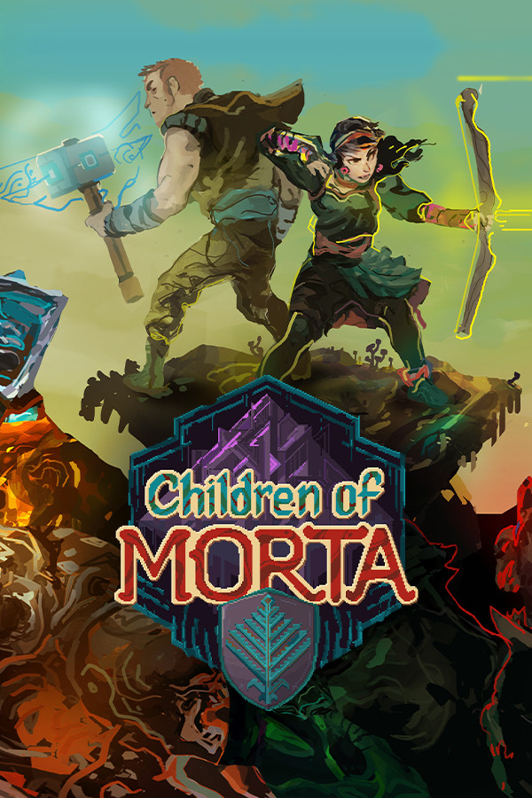

Children of Morta
Children of Morta
Details
|  | |
| Playtime | Not Played |
| Last Activity | Never |
| Added | 4/16/2022 10:07:49 |
| Modified | 5/3/2022 20:59:44 |
| Completion Status | $Check Out |
| Library | Playnite |
| Source | Wanderer |
| Platform | PC (Windows) |
| Release Date | 9/3/2019 |
| Community Score | 89 |
| Critic Score | 82 |
| User Score | |
| Genre | Adventure RPG |
| Developer | Dead Mage |
| Publisher | 11 bit studios |
| Feature | Co-Op Full Controller Support Multiplayer Online Co-Op Remote Play On TV Shared/Split Screen Shared/Split Screen Co-Op Single Player Stats |
| Links | Community Hub Discussions Guides News Store Page PCGamingWiki Achievements |
| Tag | [EMT] Logo Missing |
Description
IT RUNS IN THE FAMILY
Children of Morta is an action RPG with a rogue-lite approach to character development, where you don’t play a single character - but a whole, extraordinary family of heroes. Hack’n’slash through hordes of enemies in procedurally generated dungeons, caves and lands and lead the family of Bergsons, with all their flaws and virtues, against the forthcoming Corruption.
FEATURES:

ONLINE CO-OP is live now in the game giving you the possibility to play with a long-distanced friend! Available both in Story and Family Trials modes, the Online Co-op gives you a chance to team up and battle Corruption side by side. Local Co-op is also available!

GAMEPLAY
Gameplay-wise it's a unique mix of action-adventure RPG, rogue-lite and hack and slash game. By leveling up, you develop not only individual characters but also the entire family. There is no permadeath and you can change family members between the dungeon runs.

STORY
The story takes place in a distant land but copes with themes and emotions common to all of us: love and hope, longing and uncertainty, ultimately loss... and sacrifice we are willing to make to save the ones we care the most for. Ultimately, it's about a family of heroes standing against the encroaching darkness.

DUNGEON CRAWLING
All the dungeons in the game are procedurally generated, which means their layout is different with each adventure. There can be from two to four levels of each dungeon, with a unique boss fight at the end. You can always get back to the previous dungeons to get extra XP or finish all the side quests.

CHARACTERS & SKILLS
Ranged attacks, magic spells, blocks, stuns, healing, evasions and passive skills - it's all there for you to discover, unlock and upgrade. You can choose from seven different family members, each one having unique skill sets. The father, John - a protective warrior with a sword and shield. The elder daughter Linda - a precise archer. Kevin, a quiet fighter equipped with deadly daggers. Lucy - a lively and bold fire mage. Mark - a mindful martial arts fighter. Joey - who smashes his enemies with a sledgehammer. And the latest addition to the family - Apan, a mighty healer and a firm defender in one.

ART STYLE
A combination of hand-painted pixel art and frame-by-frame animations partnered with modern lighting techniques come to life to create the beautifully dangerous world of Children of Morta!

The ancient Development Roadmap has come to an end. The final point - Fellowship Sanctuary - has been reached, giving you a free update with Online Co-op for two players. The Online Co-op is available in all game modes (Story and Family Trials) and like the local co-op, it offers numerous playstyles, since every Children of Morta warrior has a unique fight style.
Let's have a look at the entire Development Roadmap and all that have been added over time::
1. Shrine of Challenge - Visited on Feb 2nd, 2020.
New difficulty settings and a pack of new, shiny items.
2. Setting Sun Inn - Visited on May 7th, 2020.
New Game+ Mode added to the game.
3. Bergsons' House - Visited on June 24th, 2020.
A new playable character: Apan.
4. A Treasure! - Visited on August 24th, 2020.
New items pack.
5. Paws and Claws: Charity DLC - Visited on August 24th, 2020.
Animal Shelter System added to the game along with new mechanics and events. 100% of our proceeds from this DLC go to the HSI charity!
6. Temple of The Endless - Visited on April the 7th. 2021.
A major update adding a brand-new mode called Family Trials to the game.
7. Ancient Spirits - Visited on October 7th, 2021.
New playable character and additional goodies!
8. Fellowship Sanctuary - Visited on February 14th, 2022.
This free update brings long-awaited Online co-op!